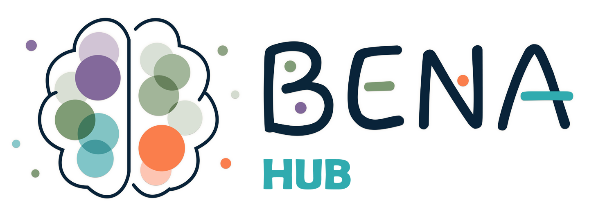
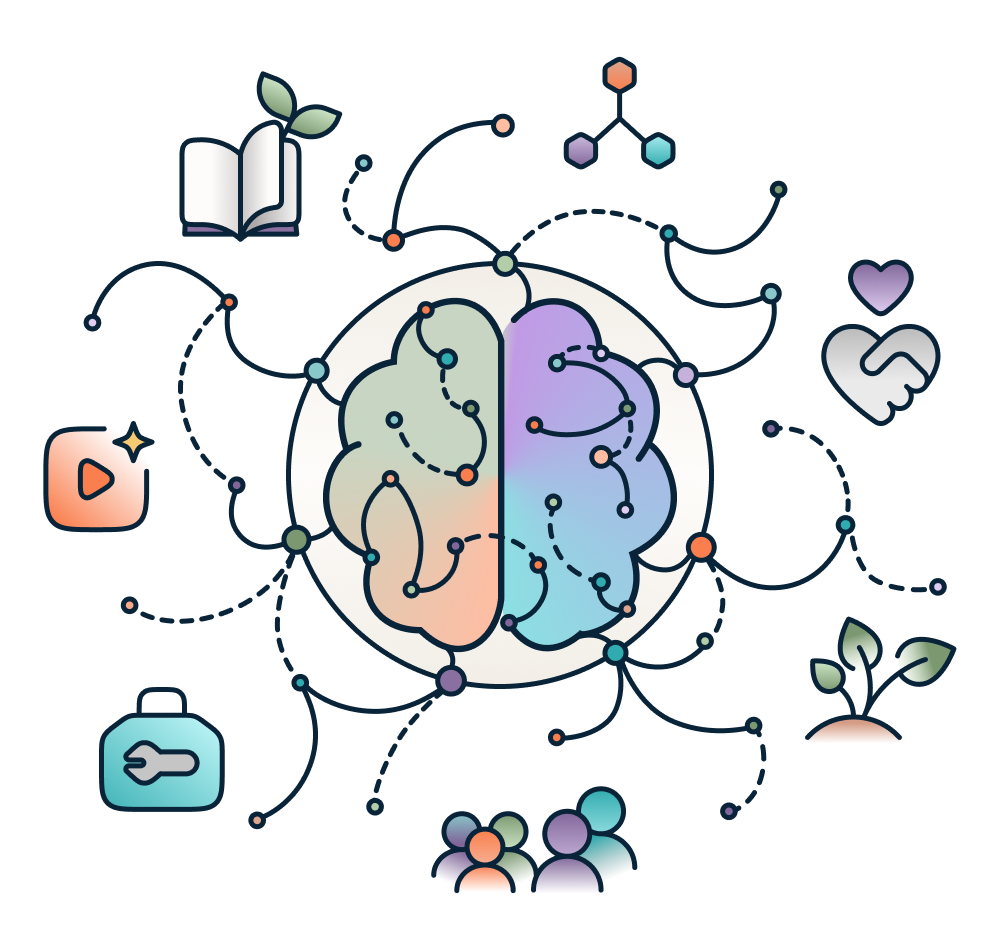

Bienvenue sur BENA Hub
Où aimerais-tu commencer aujourd'hui?
Tu n'as pas besoin de tout comprendre tout de suite. Choisis simplement ce qui ressemble le plus à ce que tu cherches en ce moment.

Je veux comprendre...
Des explications claires sur les comportements, les émotions et les réalités qui te questionnent.
J'ai de la difficulté avec...
Les relations peuvent parfois être compliquées. Explore les sujets qui ressemblent le plus à ce que tu vis en ce moment.
J'aimerais mieux me connaître
Pour mettre des mots sur ce que tu ressens, clarifier tes besoins et mieux comprendre ton fonctionnement.
Je cherche de l'accompagnement
Pour découvrir les rencontres, le soutien et l'intervention psychosociale.
Voir les services →